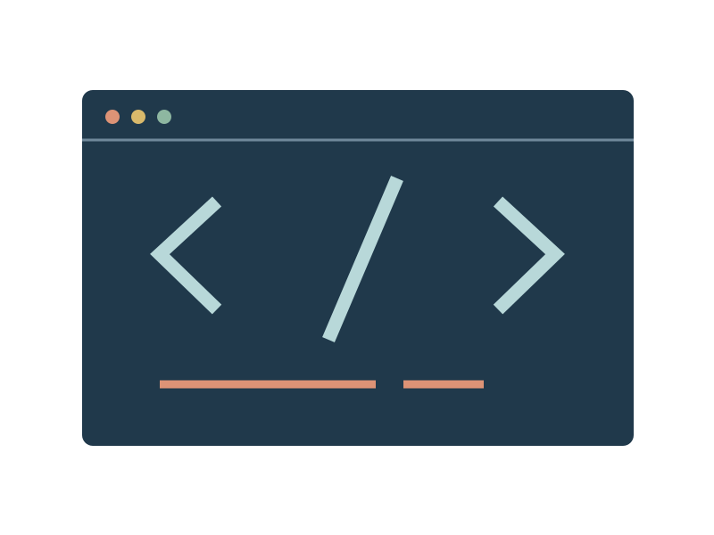

Keep the useful bit.
A small collection of programming notes for the things worth understanding twice. Clear examples, a few good habits and a local JSON workbench.

Write the invariant down.
A useful note says what must stay true, gives a small example and names the failure case. That is often more valuable than a large block of unexplained code.